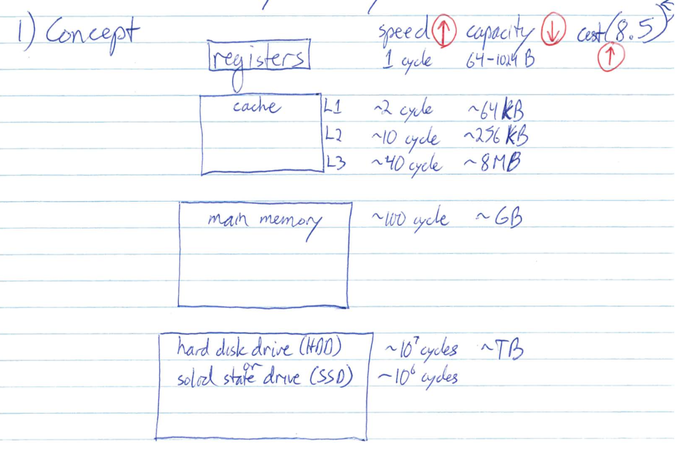
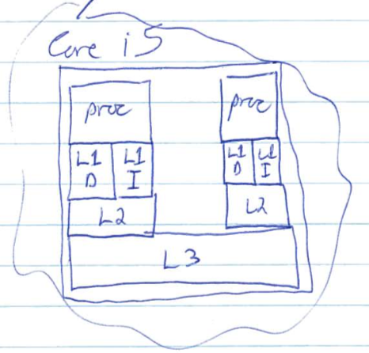
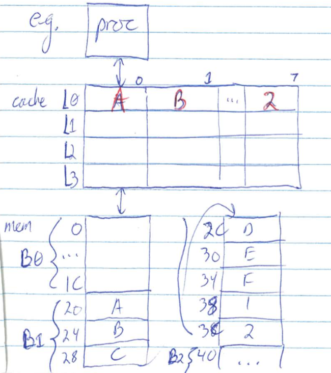
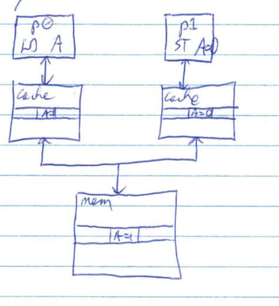
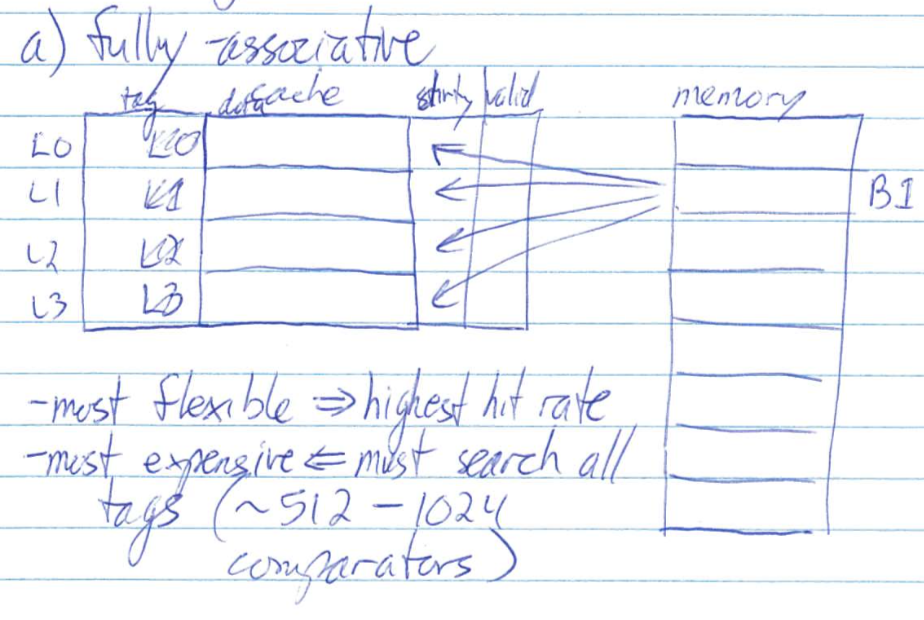
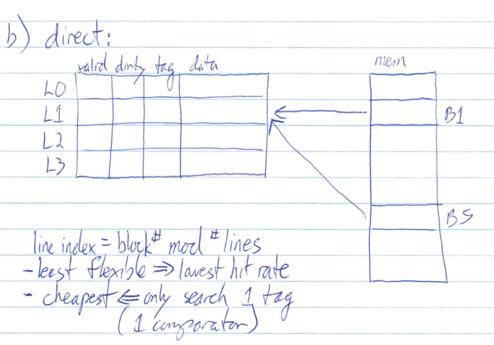
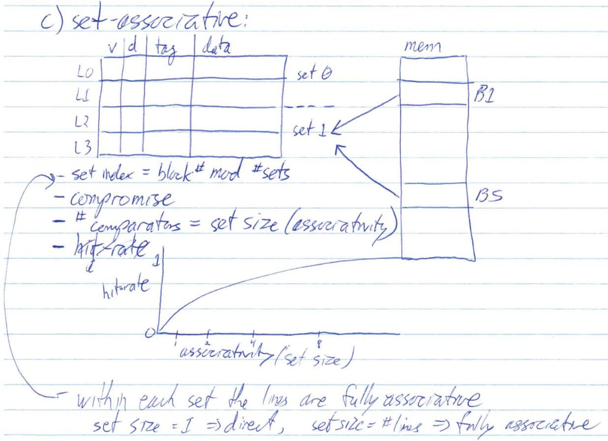
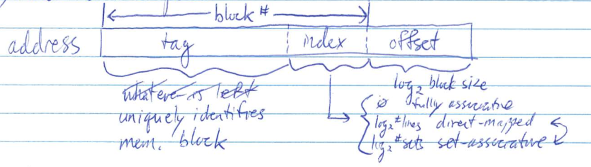
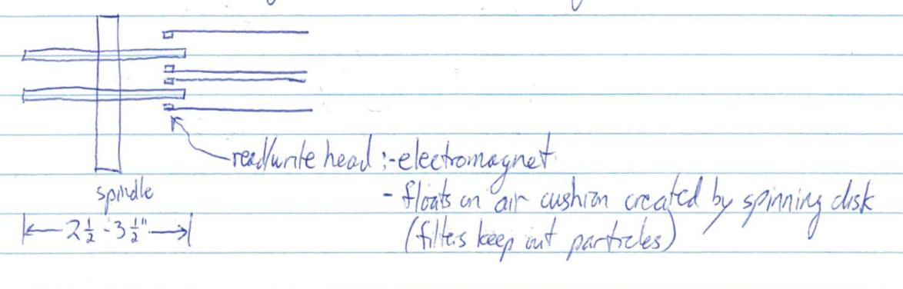
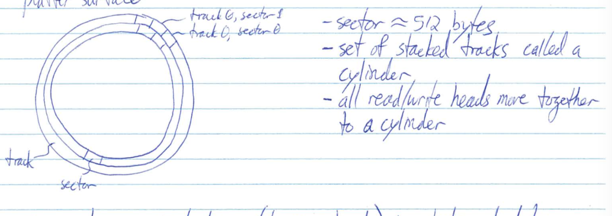

e.g. ARM Cortex A9
line length = 8 words 4-way set associative critical word first size = 16, 32 or 64 kB
e.g
- cache starts empty
- read at $24
- cache miss
- all of B1 copied to cache L0
- word 1 passed to proc
- read at $28
- cache hit in L0
- word 2 passed to proc

e.g.
h = 90%, C = 1 cycle, M = 10 cycles
tavg = 0.9 x 1 + (1 - 0.9) 10 = 1.9 cycles

Write policy:
  

e.g. line size = 32 bytes, #lines = 64, # address bits = 16
addresses
0 - 31 B0 0000 0000 000X XXXX
32- 63 B1 0000 0000 001X XXXX
64- 95 B2 0000 0000 010X XXXXaddress 0x1234 => 0001 0010 0011 0100
Fully associative: 0001 0010 001 tag, 1 0100 offset
4 way set associative: 0001 001 tag, 0 001 index, 1 0100 offset
#sets = 64 / 4 = 16, index bits = log216 = 4Direct mapped: 0001 0 tag, 010 001 index, 1 0100 offset
index bits = log264 = 6

